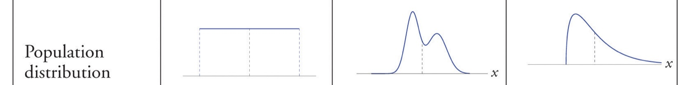
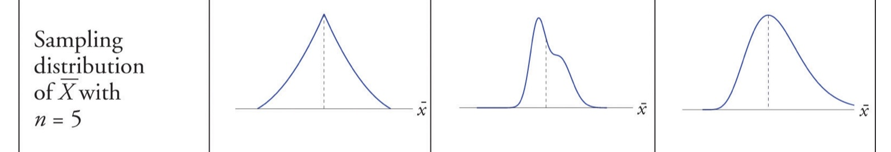
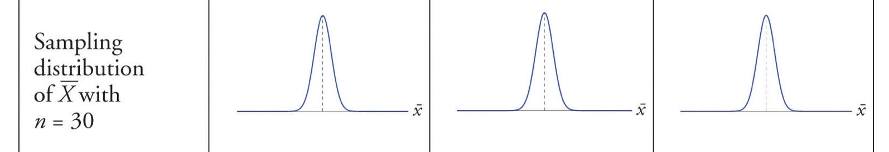
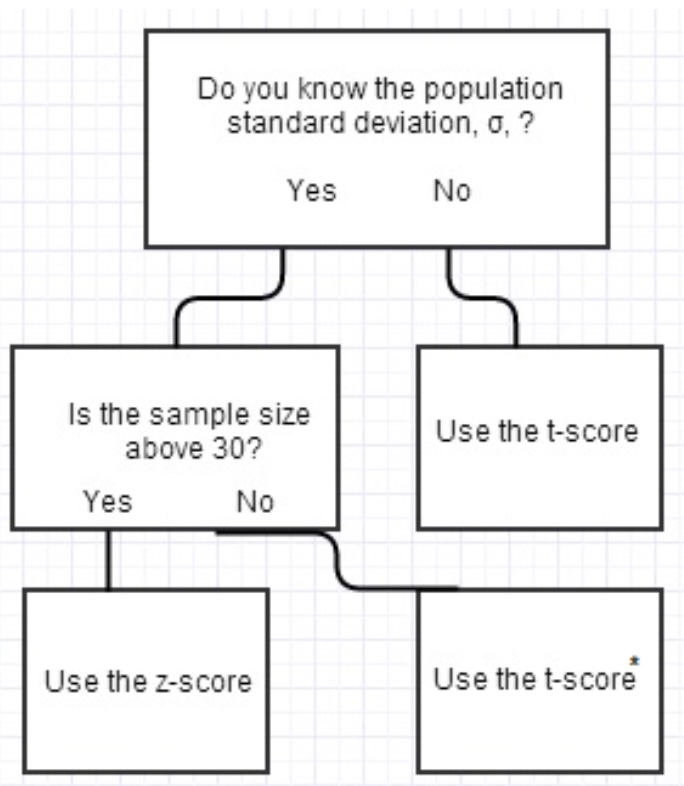
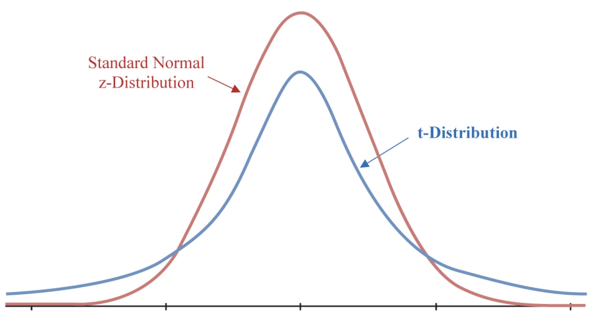
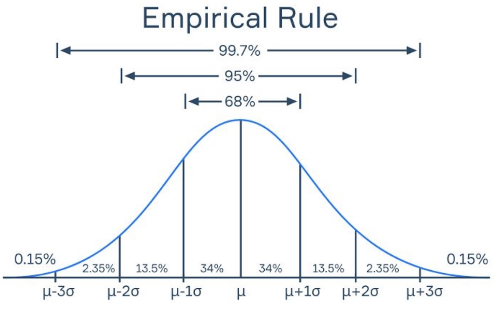
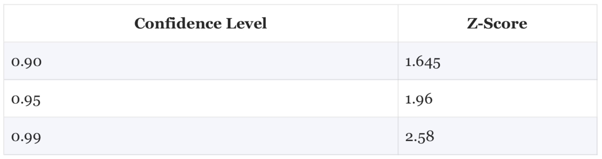
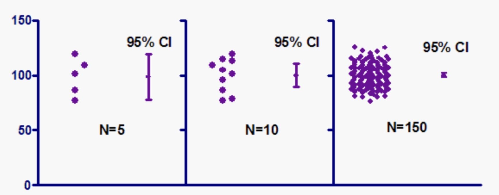
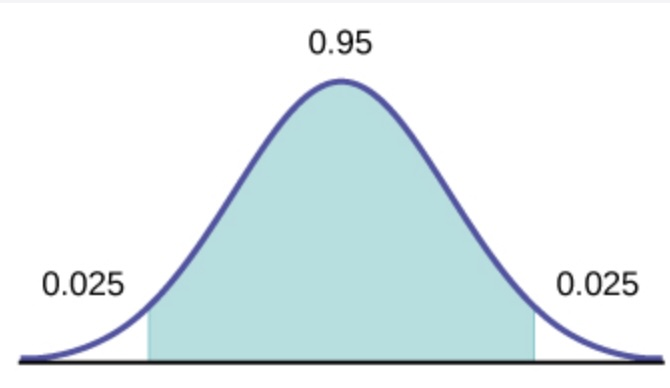
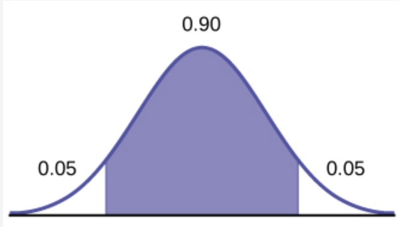

Imagine you are a political pollster that is working to try to get a candidate elected. What you are really trying to do is determine if the people are going to vote your candidate into office. You want to know the percentage of the voters that are going to vote for your candidate. Unfortunately the only way you will know this is to ask every single voter in the district. What you are trying to figure out is the parameter of the population. The parameter is the true value of the population. In this case the parameter is the percentage of voters that are going to vote for your candidate. The value of this parameter is often labelled \(\mu\) and it is the value that you are trying to estimate.
Since you can’t ask every voter in the district you are going to have to take a sample of the population. The sample is a subset of the population. You are going to use the sample to estimate the parameter. The estimate is called a statistic and it is calculated from the sample. The statistic is the best guess of the parameter that you can make given the information that you have. In this case the statistic is the percentage of voters in the sample that are going to vote for your candidate. The statistic is often labelled \(\bar{x}\).
In almost all cases, the statistic is not going to be the same as the parameter. The statistic should to be close to the parameter but it is not going to be the same. The statistic is going to be off by some amount. The amount that the estimate is off by is called the margin of error. The margin of error is the difference between the parameter and the estimate and is often labelled MOE.
The margin of error is going to be different for every sample that you take. It is going to be different because every sample you take is going to be different. In order to avoid bias in creating the sample, you are going to take a random sample. This means you are randomly going to select people from the population to be in the sample. Since the sample is random, the margin of error changes for each group.
Central Limit Theorem
The theory that is driving the calculation of the margin of error is the Central Limit Theorem. The Central Limit Theorem states that the distribution of the sample mean is approximately normally distributed. Here is a way to wrap your head around this idea. Here is a picture of three completely different distributions, all with the same mean, and none of which look anything remotely like the normal distribution.

The first distribution is a uniform distribution. The second distribution is a a bimodal distribution. The third distribution is a positive skewed distribution.
The sampling distribution just means that we need to take every possible sample and look at the distribution that results from those samples. In the picture above, a regular distribution is just a sampling distribution with samples of size 1.
Look what happens when we create a sampling distribution for the three examples above where we are taking samples of size 5.

In this scenario, the third distribution is starting to look like a normal distribution. This is because it wasn’t too far off from a normal distribution to begin with. The first two distributions are still not looking like a normal distribution. What happens if we increase the sample size to 30?

Wow! All three of the distributions are starting to look like a normal distribution. This is the Central Limit Theorem in action. The Central Limit Theorem states that the distribution of the sample mean is going to be normally distributed as the size of the samples get larger. Generally, once the sample size hits 30, the distribution of the sample mean is going to be normally distributed. This is going to be true no matter what the original distribution of the population is. The Central Limit Theorem also states that the standard deviation of the sample mean is going to be the standard deviation of the sample divided by the square root of the number of observations in the sample.
Creating a Confidence Interval
Therefore we are going to use the statistic and the margin of error to come up with an interval that we will claim has a certain probability of containing the parameter. This interval is called a confidence interval. We are going to construct confidence intervals that are reasonable to use.
For example, let’s think about the average test score from a typical college course. Here are three different confidence intervals to consider:
A 100% confidence interval for the average test score is 0 to 100.
A 5% confidence interval for the average test score is 82 to 85.
A 95% confidence interval for the average test score is 78 to 85.
The first confidence interval is not very useful because it is too wide. Has an interval been constructed that will definitely catch the parameter? Absolutely! But it is not very useful because it is too wide.
The second confidence interval is too narrow. It is too narrow because it is unlikely that the interval will contain the parameter. This is saying that the confidence interval is 5% likely to contain the parameter. This is not a very useful confidence interval, either.
The third confidence interval is a good confidence interval. It is saying that based on the methods used, the interval is 95% likely to contain the parameter. This is a good confidence because we have a high level of confidence and a reasonable interval.
When you are creating a confidence interval, these are the trade offs you need to consider when creating the confidence interval. You do not want the interval to be so wide it is useless or too small so that you don’t have much confidence that you have the parameter. You want to have a reasonable interval that you have a high level of confidence that you have the parameter.
The idea for creating a confidence interval is not difficult. You are going to take a sample from the population and calculate the statistic from the sample. You are then going to calculate the margin of error The confidence interval can be constructed as follows :
\(\bar{x} \pm MOE\)
And this leads us to the question of how to calculate the margin of error. The margin of error is calculated as follows:
The test statistic is the number that you are going to use to help create the confidence interval. The test statistic is going to be based on the level of confidence that you want. The higher level of confidence will result in a higher test statistic. The information we are given in the problem will dictate to us the type of test statistic that we are going to use. There are 2 types of test statistics that we are going to use to create a confidence interval. They are the z-score and the t-score. They are similar to each other, especially if we have a large sample size. So which one do we use?
If the sample size is small, or we do not know the standard deviation of the population, then we are going to use the t-score. If we know the population standard deviation and have a large sample size (\(n \geq 30\)), then we are going to use the z-score. Here is a flow chart to help you decide which test statistic to use:

The normal distribution and the t-distribution are very similar to each other. The t-distribution is going to be wider than the normal distribution. The t-distribution is going to be wider because it has more variability. All this means is that we are not as certain about the t-distribution as we are about the normal distribution. Thus the probabilities in the tails of the t-distribution are going to be larger than the normal distribution.

As mentioned above, once the samples sizes get large, there is little difference in the sampling distributions.
This means the confidence intervals should take on one of the following two forms:
\(t\) corresponds to the level of confidence that you want
\(s_x\) is the standard deviation of the sample
\(n\) is the number of observations in the sample
Let’s discuss how to find the values for these two test statistics.
Z-Score
The first test statistic that we are going to use is the z-score. The z-score comes from the normal distribution and is the number of standard deviations that you are away from the mean. The z-score is going to be used when we know the standard deviation of the population and when we have a large sample size.
Empirical Rule
A z-score is the number of standard deviations that you are away from the mean. This also shows us the percentage of the distribution that is within the z-score. The Empirical Rule gives us a few of the more useful z-scores:

Based on the Empirical Rule, we can see that 95% of the distribution is within almost 2 standard deviations of the mean. This means that if we want to have a 95% confidence interval, we are going to use a z-score of 1.96. If we want to have a 90% confidence interval, we are going to use a z-score of 1.645. If we want to have a 99% confidence interval, we are going to use a z-score of 2.58.

If we wanted to construct a 95% confidence interval, we would use the following formula to create it :
When we look at the formula, you may notice that there is not much that we are in control of throughout this process. We are not in control of the sample mean or the standard deviation of the sample. What we can control is the number of observations in the sample and the level of confidence that we want.
What if we have created a confidence interval and think it is too narrow, then we can increase the level of confidence. If we created a 90% confidence interval then we could increase the level of confidence to 95% to make the confidence interval wider. We do have to be too cautious about making it too wide.
What if we have created a confidence interval and think it is too wide, then we can increase the number of observations in the sample. If we increase the number of observations in the sample then the standard deviation of the sample is going to decrease. This is going to make the margin of error smaller and the confidence interval narrower.
Consider this image:

This image shows the relationship between the number of observations in the sample and the margin of error. The first part shows the length of the confidence interval with a small sample size of \(n=5\). The second part shows the length of the confidence interval with a slightly larger sample of sinze \(10\). The third part shows the length of the confidence interval with a larger sample size of \(n=150\). As the number of observations in the sample increases, the margin of error decreases. This is because the larger sample size is giving us more information so the data is not as varied. While this is a good thing, it is not always possible to increase the number of observations in the sample. This could be a process that takes a lot of time and money.
The moral of this story is that you may have to make some trade offs when creating a confidence interval.
Example Using Z-Score
Example : Suppose we collect a population of turtles with the following information :
Population size : \(n=35\)
Population mean weight : \(\bar{x} = 300\)
Population standard deviation : \(\sigma = 18.5\)
We want to construct a 95% confidence interval for the average weight of the turtles.
# Sample sizen <-35# Sample mean weightx_bar <-300# Sample standard deviationsigma <-18.5# Z-score for 95% confidence intervalz <-1.96# Margin of errorMOE <- z * sigma /sqrt(n)MOE
Our interpretation would be that we are 95% confident that the value of the parameter is between 293.87 and 306.13.
I hope some questions are popping into your mind right now. For instance, if we have the data for the entire population, why do we need to create a confidence interval? This is an excellent question. One of the reasons is that we could just be working through an example where the population is given to us. In practice, we will not have the data for the entire population. Which means we will almost always be using a t-score to create a confidence interval.
T-Score
The t-score is going to be used when we do not know the standard deviation of the population or when we have a small sample size. We can use R to calculate the value of a t-score that we need. We do need a little bit of information to calculate the t-score. We need to know the level of confidence that we want and the degrees of freedom. The degrees of freedom is the number of observations in the sample minus 1. This represents the number of independent scores in the data set. Let’s revist the previous example, but with a smaller sample size and the stnadard deviation of the population was unknown so we calculated it from the sample.
Sample size : \(n=25\)
Sample mean weight : \(\bar{x} = 300\)
Sample standard deviation : \(s_x = 19.3\)
We want to construct a 95% confidence interval for the average weight of the turtles.
# Sample sizen <-25# Sample mean weightx_bar <-300# Sample standard deviations_x <-19.3# Degrees of freedomdf <- n -1# T-score for 95% confidence interval. Use the qt command.t <-qt(0.975, df)# Margin of errorMOE <- t * s_x /sqrt(n)MOE
The interpretation here is that the confidence interval goes from 292.03 to 307.97. We are 95% confident that the parameter is in this interval.
Let’s go over the command we used to find the t-score.
t <- qt(0.975, df)
The qt command is used to find the t-score. The first argument is the level of confidence that we want. In this case we want a 95% confidence interval so we are going to use 0.975. Why do we do this? Consider this image:

The t-score needed is the mark at the end of the green shaded area, which is the middle 95% of the t-distribution. If you look at the mark though, it covers the first 97.5% of the t-distribution. This is why we use 0.975 as the argument in the qt command. The second argument is the degrees of freedom. The degrees of freedom is the number of observations in the sample minus 1.
When people think about the end areas for the confidence interval, this is measured using the variable \(\alpha\). A 95% confidence interval would have \(\alpha\) represent the other 5%, so \(\alpha = 0.05\).
This means that the area in each tail is half of \(\alpha\), or 0.025. This is why we use 0.975 as the argument in the qt command, because \(1 - 0.025 = 0.975\).
We could have also used the following command to find the t-score:
n <-25df <- n -1alpha =0.05t <-qt(1- (alpha/2), df)
If we wanted a 90% confidence interval, we would use the following command to find the t-score:
t <- qt(0.95, df)

As you can see, the purple region ends after the first 95% of the area of the distribution. This is why we use 0.95 as the argument in the qt command.
Conclusion
This section has been about constructing confidence intervals. We are trying to estimate a parameter from a population. We know that when we take a sample, the value from the sample is almost sure to be different from the population. So instead of using the singular value from the sample, we create an interval that we feel comfortable that captures the parameter. Because of the randomness of drawing a sample we are not going to definitively know if the parameter is in the interval. However, based on the methods we have discussed in this section, we can be highly confident that the parameter is in the interval.
Exercises
For the following problems you will need to calculate the following :
The mean of the sample
The standard deviation of the sample
The number of observations in the sample
The alpha level
The test statistic (t-score)
The margin of error
The confidence interval
Problem 1: Estimating the Mean Waiting Time for Old Faithful Eruptions
Use the faithful dataset to estimate the mean waiting time between eruptions using a 99% confidence interval.
Result: The 95% confidence interval for the mean pressure is approximately [16.0721066, 232.6013039].
Problem 9: Estimating the Mean Weight of Chickens
Use the ChickWeight dataset to estimate the mean weight of chickens at Time 20 using a 95% confidence interval.
(Hint : Look at the set up of ChickWeight using ?Chickweight. There are 4 variables, one of which is “Time”. We want the variable Chickweight$Time when Time = 20. Filter the dataset to get the weights at Time 20)